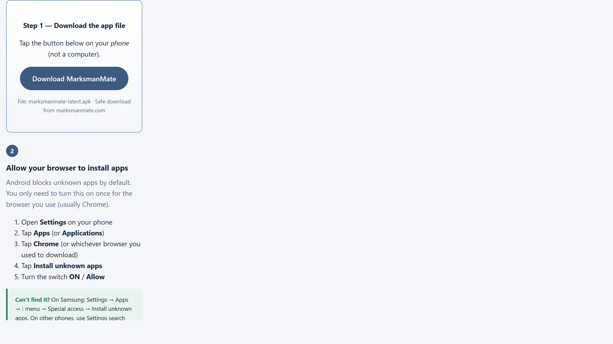
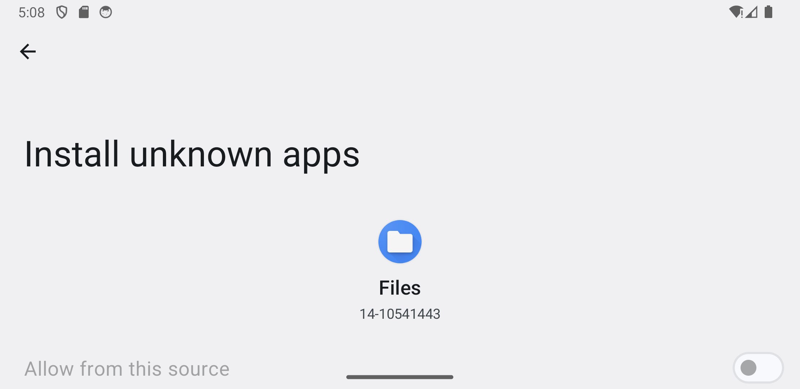
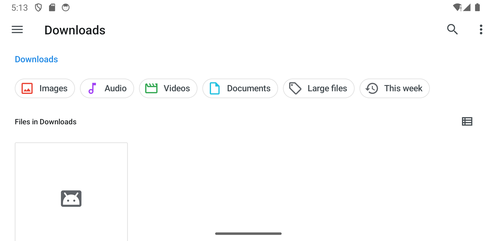
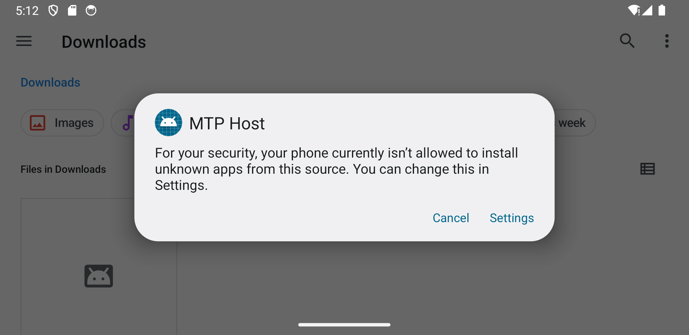
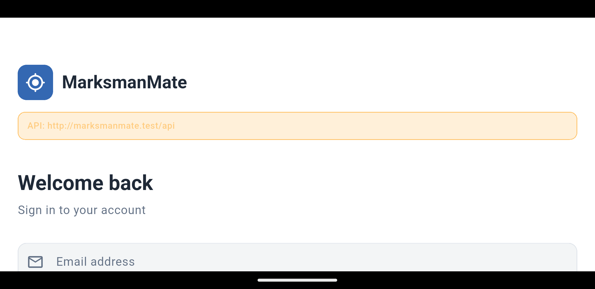
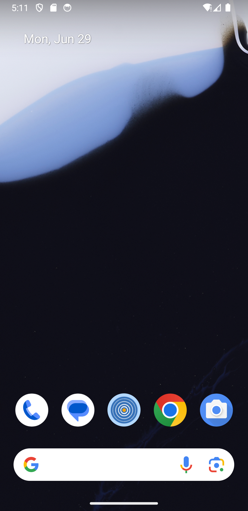

1
Download page on your phone
Open this page in Chrome on your Android phone. Scroll to the blue Download MarksmanMate button and tap it.

Follow these steps in order. Each one has a picture to help you. It usually takes about 5 minutes.
Step 1 — Download the app file
Tap the button below on your phone (not a computer).
File: marksmanmate-latest.apk · Safe download from marksmanmate.com
Open this page in Chrome on your Android phone. Scroll to the blue Download MarksmanMate button and tap it.

Android blocks unknown apps by default. You only need to turn this on once for the browser you use (usually Chrome).

After the download finishes, tap the notification at the top of your screen that says the download is complete.
If you missed the notification:

Your phone will ask if you want to install MarksmanMate.
If you see a security popup first, tap Settings and allow installs from your browser or Files app, then tap the APK again.

When installation finishes:

Use the same account you use on the MarksmanMate website.
The app needs internet the first time you sign in.

After installation, the MarksmanMate icon appears on your home screen or app drawer. Tap it to open the app.
After signing in you’ll see the Dashboard. Use the bar at the bottom:
You can also join clubs, groups, and events from the menus.

MarksmanMate may ask to use certain phone features. Here is why — tap Allow when prompted:
You can change these later in your phone’s Settings → Apps → MarksmanMate → Permissions.
Your phone may be too old (needs Android 7+), or the download did not finish. Delete the file, download again on a good Wi‑Fi connection, and retry.
Go back to Step 2 and turn on Install unknown apps for your browser. Some phones also ask you to confirm on the install popup — tap Settings there and allow it.
Make sure you are on your phone, not a laptop. Try a different browser (Chrome works well). Check you have storage space free.
Make sure you have internet. Try email/password instead. If it still fails, contact support — we may need to update app settings on our side.
Come back to this page and download again. Install over the existing app — you will not lose your data. When MarksmanMate is on the Google Play Store, updates will happen automatically.
Email us at support@marksmanmate.com and tell us your phone model (e.g. Samsung Galaxy A54) and which step you are on. We are happy to help.